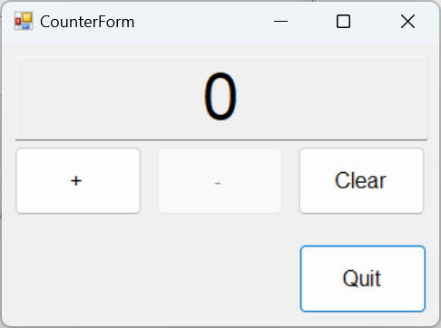
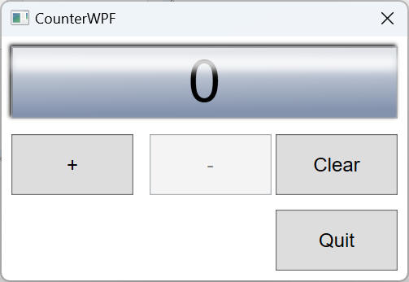

[Azure DevOps] Pipelines で c#(.NET Framework) を使ってみる
今更ながら Azure DevOps 環境で c# (.NET Framework) アプリを CI/CD
してみたいと思いまして、トライした内容をこちらで記載してみたいと思います。
1.1. "Azure DevOps" に Git プロジェクトを作成
"Azure DevOps" のアカウントを既に所有しているものとして記載します。
Step 1
［+ New Project］ボタンをクリックします。

Step 2
"Procjet name" など必要事項を記入および選択後、［Create］ボタンをクリックします。
私はこの後で超簡単な Counter プログラムを作成してリポジトリへ登録する予定なので、"Project name" を Counter
として作成します。
下図はプロジェクト作成完了直後の画面です。

1.2. c# (.NET Framework 4.8) プロジェクトを作成
Pipeline を実行する対象となるプロジェクトを作成します。
ここでは以下のようなテストプロジェクトを作成して進めました。
Step 1
先ほど作成した Git プロジェクト（Counter）を Clone します。
下図あたりの表示にあるコマンドを使ったり、画面上のボタン操作を行うことで git clone します。
Step 2
Clone した場所へ Visual Studio で新しい c# プロジェクトを作成します。
私は以下のような環境で c# プロジェクトを作成しました。
[環境]
|
| コンパイラ : |
Visual Studio 2022, |
Version 17.8.4 |
|
| 開発言語: |
c# |
|
|
| フレームワーク： |
.NET Framework 4.8 |
|
|
| テストフレームワーク： |
MSTest.TestAdapter, |
3.1.1 |
|
| |
MSTest.TestFramework, |
3.1.1 |
|
| |
NUnit, |
4.0.1 |
|
| |
NUnit3TestAdapter, |
4.5.0 |
|
| OS : |
Windows11 home, |
23H2 |
|
代表的な Unit テストフレームワーク（NUnit、MSTestV1、MSTestV2）についても準備して動作を評価してみます。
[table.] 各プロジェクトの説明
| プロジェクト名 |
内容 |
| CounterDll |
値（Integer）を管理する class Counter を提供する dll。
class Couter
は、Increment, Decrement, Clear ３つのメソッドを持つ。 |
| CounterForm |
class Counter を使った WinForm アプリ。 |
| CounterWPF |
class Counter を使った WPF アプリ。 |
| testCounter1 |
CounterDll をテストする。NUnt 版。 |
| testCounter2 |
CounterDll をテストする。MSTestV1 版。 |
| testCounter3 |
CounterDll をテストする。MSTestV2 版。 |
Visual Studio 上の画面の様子です。

図： CounterForm 画面例

図： CounterWPF 画面例

1.3. Git リポジトリへプロジェクトをコミット＆プッシュ
Git (Azure DevOps) へコミット＆プッシュします。手順については本ページの主たる内容から外れるので記載を割愛します。
コミット＆プッシュ後の Azure DevOps 画面です。
以上で Pipelines を操作する前の事前準備を完了です。
Pipeline を作成していきます。
Step 1
画面左側の Pipeline ボタンをクリックすると下図のような画面を表示するので、［Create Pipeline］ボタンをクリックします。
Step 2
Pipeline の対象となるソースコードの所在を選択します。本ページでは "Azure Repos Git" を選択します。
Step 3
対象リポジトリを選択します。ここでは Counter を選択します。

Step 4
Pipeline を構成するプラットフォームを選択します。ここでは「.NET Desktop」を選択します。

Step 5
"azure-pipelines.yml" ファイルを生成してリポジトリへコミットされました。
内容を確認して必要に応じて修正します。まずは内容を確認してみましょう。
生成された yml ファイルのコードは以下のとおりです。
(1)NuGet パッケージの復元して、(2)ビルドして、(3)ユニットテストする、というような流れです。
["azure-pipelines.yml"]
# .NET Desktop
# Build and run tests for .NET Desktop or Windows classic desktop solutions.
# Add steps that publish symbols, save build artifacts, and more:
# https://docs.microsoft.com/azure/devops/pipelines/apps/windows/dot-net
trigger:
- main
pool:
vmImage: 'windows-latest'
variables:
solution: '**/*.sln'
buildPlatform: 'Any CPU'
buildConfiguration: 'Release'
steps:
- task: NuGetToolInstaller@1
- task: NuGetCommand@2
inputs:
restoreSolution: '$(solution)'
- task: VSBuild@1
inputs:
solution: '$(solution)'
platform: '$(buildPlatform)'
configuration: '$(buildConfiguration)'
- task: VSTest@2
inputs:
platform: '$(buildPlatform)'
configuration: '$(buildConfiguration)'
一部について説明します。
| 要素 |
内容 |
備考 |
| trigger |
CI トリガーを取得するブランチを設定します。 |
|
| vmImage |
ビルドするプラットフォームを設定します。Microsoft によってホストされるエージェントから指定します。 |
|
| NuGetToolInstaller@1 |
インターネットまたはツール キャッシュから特定のバージョンの NuGet を取得し、PATH に追加します。
このタスクを使用して、NuGet タスクで使用される NuGet のバージョンを変更します。 |
|
| NuGetCommand@2 |
このタスクを使用して、NuGet パッケージの復元、パック、プッシュ、または NuGet コマンドの実行を行います。 |
|
| VSBuild@1 |
このタスクを使用して MSBuild を使用してビルドし、Visual Studio バージョン プロパティを設定します。 |
|
| VSTest@2 |
このタスクを使用して、Visual Studio テスト (VSTest) ランナーを使用して単体テストと機能テスト
(Selenium、Appium、コード化された UI テストなど) を実行します。 Visual Studio テスト
アダプターを持つテスト フレームワークを実行できます。
フレームワークの例としては、MSTest、xUnit、NUnit、Chutzpah (QUnit、Mocha、Jasmine を使用する
JavaScript テスト用) などがあります。 |
|
Step 6
いよいよ［Save and run］してみます。下図［Save and run］ボタンをクリックします。

下図画面を表示するので、もう一度［Save and run］ボタンをクリックします。
Pipeline を実行開始しました。

Pipeline を正常に完了ました。完了後の画面を以下に示します。

「✔ Job」のあたりをクリックすることで Job 詳細を確認することができます。
どうやら Pipeline は全て正常に処理できたようです。

以上から確認できたとりあえずの課題を以下に列挙します。
課題：
- ビルド生成物（artifacts）を登録できていない。
「0 artifacts」
という表示がありますが、ちゃんと設定できるとここからビルド生成物などを取得できるようになります。
- Unitテストを実施できていない。
Warnings がありますね。どうやら、VSTest
の対象を見つけることができなかった、という内容のようです。
少なくともデフォルト状態では "**\bin\**\*test.dll,
**\bin\**\*tests.dll" というファイル名を満足する必要があるようです。
次章からこれら課題を順に解決していきます。
ビルド生成物（artifacts）を登録するように yml ファイルを修正します。
使用するコマンドは下記の２つです。
- CopyFiles@2
- PublishBuildArtifacts@1
CopyFiles@2 で登録したいファイルを一か所に集めて、PublishBuildArtifacts@1
でアーティファクト登録する、というような手順です。
他：
- 前回コードからの差分箇所に色付けしています。
- *.pdb ファイルを除外しています。
意図的に２つの記載方法を試しています。
["azure-pipelines.yml"]
# .NET Desktop
# Build and run tests for .NET Desktop or Windows classic desktop solutions.
# Add steps that publish symbols, save build artifacts, and more:
# https://docs.microsoft.com/azure/devops/pipelines/apps/windows/dot-net
trigger:
- main
pool:
vmImage: 'windows-latest'
variables:
solution: '**/*.sln'
buildPlatform: 'Any CPU'
buildConfiguration: 'Release'
steps:
- task: NuGetToolInstaller@1
- task: NuGetCommand@2
inputs:
restoreSolution: '$(solution)'
- task: VSBuild@1
inputs:
solution: '$(solution)'
platform: '$(buildPlatform)'
configuration: '$(buildConfiguration)'
- task: VSTest@2
inputs:
platform: '$(buildPlatform)'
configuration: '$(buildConfiguration)'
- task: CopyFiles@2
inputs:
contents: CounterWPF\bin\$(buildConfiguration)\**\!(*.pdb)
targetFolder: $(Build.ArtifactStagingDirectory)
- task: CopyFiles@2
inputs:
contents: |
CounerForm\bin\$(buildConfiguration)\*.*
!**\*.pdb
targetFolder: $(Build.ArtifactStagingDirectory)
- task: PublishBuildArtifacts@1
inputs:
pathToPublish: $(Build.ArtifactStagingDirectory)
artifactName: 'MyBuildOutputs'
publishLocation: 'Container'
Pipeline 実行完了後の画面です。「1 published」に変わりました。

「1 published」あたりの画面をクリックすると下図 Artifacts 画面を表示します。
[･･･] ボタンウォリックすることであなたが希望する Artifacts をダウンロードなどすることができます。

本ページの情報は、特記無い限り下記 MIT ライセンスで提供されます。
The MIT License (MIT)
Copyright 2024 Kinoshita Hidetoshi
Permission is hereby granted, free of charge, to any person obtaining a copy
of this software and associated documentation files (the "Software"), to deal
in the Software without restriction, including without limitation the rights
to use, copy, modify, merge, publish, distribute, sublicense, and/or sell
copies of the Software, and to permit persons to whom the Software is
furnished to do so, subject to the following conditions:
The above copyright notice and this permission notice shall be included in all
copies or substantial portions of the Software.
THE SOFTWARE IS PROVIDED "AS IS", WITHOUT WARRANTY OF ANY KIND, EXPRESS OR
IMPLIED, INCLUDING BUT NOT LIMITED TO THE WARRANTIES OF MERCHANTABILITY,
FITNESS FOR A PARTICULAR PURPOSE AND NONINFRINGEMENT. IN NO EVENT SHALL THE
AUTHORS OR COPYRIGHT HOLDERS BE LIABLE FOR ANY CLAIM, DAMAGES OR OTHER
LIABILITY, WHETHER IN AN ACTION OF CONTRACT, TORT OR OTHERWISE, ARISING FROM,
OUT OF OR IN CONNECTION WITH THE SOFTWARE OR THE USE OR OTHER DEALINGS IN THE
SOFTWARE.